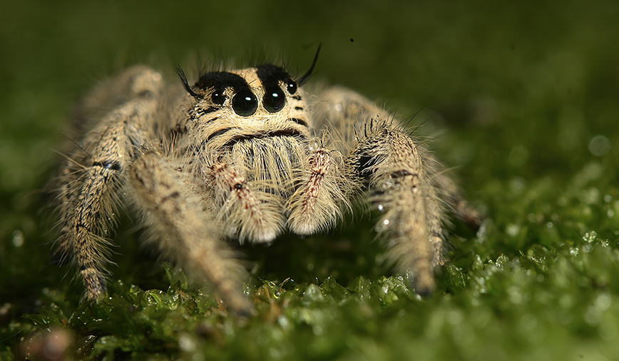

Jumping Spider

The jumping spider is a small but agile predator known for its incredible leaping ability and keen eyesight. Found worldwide, these spiders use their powerful legs to pounce on prey with precision. Unlike web-building spiders, they rely on stalking and ambushing insects. Their curious nature and unique vision make them fascinating hunters, often exploring their surroundings with remarkable enthusiasm.